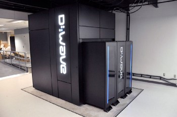
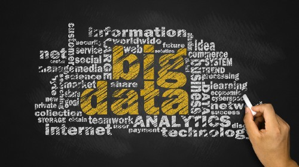
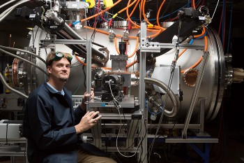

Which technologies will affect us most in the near future?
How will these advances affect us, and what will change?
Technological impacts
We came from nothing and improved our way of life through technology. We invented the internet, giving us accessible information anytime and anywhere. This information helped us transition into a world of technology and seemingly endless possibilities. We mastered sharing and accessing information. This is the beginning of an age in which we develop technological impacts.
What those impacts will be is up to the intellectual minds of our species.
There will be many impacts, multiplied by the number of people who have begun research and development across industries.
There will be opportunities like never before, with different positive effects on society and opportunities for everyone. We need to find and develop them. But we must also consider their effect on a growing civilisation: find those effects, study them and make sure the changes are positive.
If we could see these important changes in the near future, what positive consequences might they have?
Which technologies will affect us most in the near future?
Quantum computers

A new kind of computer could change how we use ordinary computers. Its processing and computing power might solve problems we cannot solve today, calculating and predicting solutions from data in a particular field much faster and with more data. One leading company in this field is D-Wave Systems, which works with organisations such as Google and NASA. It is developing large-scale quantum computers and has produced a 512-qubit processor capable of processing data to a point. This is not close to what is theoretically possible: well-developed quantum computers could process large amounts of data at speeds that seem unlikely today.
Big data and the Internet of Things (IoT)

Big data and IoT could be combined with quantum computers. Data gathered from connected devices and sensors could be processed by quantum machines. The result might be almost anything. Data collection is present across internet-connected devices. The data is here, everywhere and anytime; it needs to be collected. IoT is already present in devices and is only beginning. As devices become more sophisticated, they and their sensors can collect useful data with human help, providing information and solutions to improve our future.
Fusion reactors

These future power plants could greatly affect civilisation, producing enough electricity for everyone if and when fully functional. The field is under development. Lockheed Martin, for example, is developing what it calls a compact fusion reactor that would fit in a container. It says that if things happen in the right order, a functional reactor could be available in about ten years. These reactors are described as clean energy with minimal environmental impact. Several theoretical methods for producing fusion energy are under research and development. Which method first reaches full commercial operation is a question of time.
How will these technological advances affect us, and what will change?
Quantum computers
The processing power of fully developed, functional quantum computers could be remarkable. They might offer opportunities to find answers and solutions much faster. The concern may become collecting enough data rather than having too much. Fast, reliable machines could shorten processing that takes today’s computers a long time, providing more solutions.
We may replace earlier computers with quantum machines. Time saved in processing could be considerable, with large amounts of data processed quickly. The solutions could help us understand and prepare. With the right mathematical formulas and advanced algorithms, answers from these machines could make our days easier and improve civilisation.
We will see small or large changes in every industry because of opportunities available to everyone.
How we view computers will change. We have not yet seen how fast and reliable they can become. We look at today’s machines and think they are good enough, but what is good enough? There will always be demand for faster machines with enough capacity. Today’s machines were yesterday’s; tomorrow’s will also become yesterday’s, and so it continues.
Big data and the Internet of Things
Sensors and devices everywhere collect big data. Will there be enough of them? No. Their numbers will grow rapidly as consumer and industry demand increases. There will be challenges for privacy and human rights. Will most consumers accept collection of data about everything they do? The promise is not to collect personal information, but the possibility exists. We can follow the modern consumer and see which direction development takes.
How industries use information from our devices and sensors, and from their own machines and equipment, will change. These changes will have new meanings for consumers and industries, following us through time and explained through the data collected. Let us hope the information is used positively.
Devices will continue to be used, but what we use them for and when will change. Daily life will change as innovation continues, along with the types of data collected and the devices and sensors available. Future data could include all kinds of imaginable information, particularly historical data. With it, we might almost or completely see what comes next. There will also be continuously collected data from devices and sensors, from past to future.
Fusion reactors
This new energy source could be a turning point in history. When fully functional, the changes it brings could greatly affect human civilisation, the environment and the climate. It could replace energy sources that harm the environment and meet electricity needs around the globe.
We do not have time or money to build carbon capture and storage, CCS, at every polluting industrial site. CCS captures CO2 from fossil-fuel power plants, cement plants and similar facilities. It is a great possibility, but consider the time and cost of installing it everywhere, including Norway’s “moon landing” project.
Eventually we may recognise this and increase research into clean energy. That is why we need fusion energy: to replace harmful sources and help other nations, particularly developing countries, meet their electricity needs.
We will see more electric transport methods as energy becomes plentiful and cost-effective. It is an exciting time for transport, with new methods developing alongside innovation and electricity. We will see many changes.
The positive consequences of our time will begin with these and other technologies. Other positive developments already in research or development are on their way to transforming future civilisation.
This is the end of the beginning, to quote Sir Winston Churchill, but the beginning of an age of technological impacts.